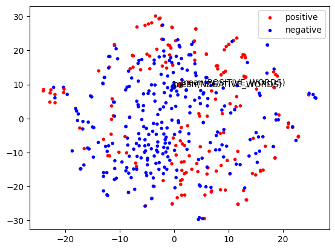

What a catchy phrase. Someone nerd-sniped me in July, essentially daring me to find some more. Here’s how I tricked the computer into coming up with more champagne phrases like this, using natural language processing tools like
the CMU Pronouncing Dictionary
GLoVe
a wordlist with frequencies
WordNet
Click for a sample of the final output (spoiler alert!)
metrics for my real friends, real tricks for my meh friends
focus for my real friends, real cuss for my faux friends
shamrocks for my real friends, real rocks for my sham friends
folkrock for my real friends, real croc for my faux friends
photos for my real friends, real toes for my faux friends
midrash for my real friends, real rash for my mid friends
medics for my real friends, real dicks for my meh friends
crappie for my real friends, real pee for my crap friends
But how do computers know how words sound?
The CMU Pronouncing Dictionary is a classical natural language processing resource that lists words and their pronunciations. It’s thirty years old! It was compiled by humans who painstakingly listed each word’s pronunciations – no neural nets or artificial intelligence here.
What is classical NLP? Why not use ChatGPT?
So-called classical natural language processing relies on computational representations of the kinds of grammar concepts used by linguists. Think back to middle-school English class. You learned about nouns and verbs and how to diagram a sentence. Natural language processing analyzes language with those kinds of representations.
This differs from AI-based NLP, whose representation of language tends to be more of black box. That black box representation is good for a lot of things, but it’s famously terrible at computational humor.
Here’s what ChatGPT gave me when I asked it for can you come up with some variants on the “champagne for my real friends, real pain for my sham friends?” template, but using different words than champagne, sham and pain?.
“Laughter for my true friends, heartfelt tears for my false friends.”
“Confetti for my loyal friends, bitter truth for my deceitful friends.”
“Hugs for my genuine friends, icy distance for my deceptive friends.”
“Sunshine for my authentic friends, thunderstorms for my treacherous friends.”
Those are terrible! They don’t follow the template at all! We can do better with classical NLP.
(But if you can coax better examples out of ChatGPT, let me know!)
If we’re gonna find more slogans like champagne for my real friends, real pain for my sham friends, we’ll have to find words like champagne that sound like compounds of a word like sham and a word like pain – regardless of how they’re spelled.
Another example of what we’re looking for is focus for my real friends, real cuss for my faux friends. In this example, focus is our champagne compound word, and it’s composed of faux (a sham word) and cuss (a pain word).
Look below to see what the pronunciation of champagne looks like, and how it’s made up of the pronunciations of sham and pain.
(Throughout this post, sections of computer code are collapsed. If you want to see the Python code that makes this project work, click the little gray arrow on the left to expand the code.)
print a few pronunciations
import cmudictcmudict_dict = cmudict.dict()for word in ["champagne", "sham", "pain"]:print("pronunciation of {} is {}".format(word, cmudict_dict[word]))
pronunciation of champagne is [['SH', 'AE0', 'M', 'P', 'EY1', 'N']]
pronunciation of sham is [['SH', 'AE1', 'M']]
pronunciation of pain is [['P', 'EY1', 'N']]
An initial rubric for a champagne phrase
A champagne phrase is (preliminarily) defined as champagne compound word for my real friends, real pain word for my sham word friends, wheresham word is an adjective and a pain word is a word that, when their pronunciations are combined, make a champagne compound word.
We’ll revise this later, but this is enough to try to get started with generating champagne phrases.
Implementing our initial rubric
Let’s use “faux” as our sham word. So we’re looking for phrases like faux pain for my real friends, real pain for my faux friends… except where faux pain is a real word.
So, now, let’s find our champagne compound words, but starting with the sound “faux”.
Cleaning up the pronunciations
The pronunciations in our example above almost match, but not quite.
The problem is that the vowel in sham (AE1) isn’t quite the same as the first vowel in champagne (AE0). The numbers represent stress. 1 is primary stress; 2 is secondary, and 0 is no stress. We don’t really care about stress for our joke format, so we will “clean” the data to ignore stress.
def remove_stress(phon):
def remove_stress(phon):return''.join(i for i in phon ifnot i.isdigit())def clean_phonemes(pron): pron =tuple(remove_stress(phon) for phon in pron) # remove stress return pron# map nouns to their "cleaned" pronunciationsword_pronunciations = {}for word, prons in cmudict_dict.items(): word_pronunciations[word] = [clean_phonemes(pron) for pron in prons]
# Due to an error in the CMU pronouncing dictionary, we have to specify that _faux_ # is actually pronounced like _foe_. (Not like _fox_.)SHAM_WORD_OVERRIDE ="foe"# None or "foe" # in case the pronunciation of the TARGET_WORD is wrong, as it oddly is for "faux"SHAM_SYLLABLE = word_pronunciations[SHAM_WORD_OVERRIDE or SHAM_WORD][0]HOW_MANY_TO_SHOW =15def find_candidate_champagne_compound_words(word_prons, sham_syllable=SHAM_SYLLABLE):""" champagne compound words have to start with the same sounds as the cham word (but can't be identical, it has to be longer!) """ word, prons = word_prons # destructuringreturnany([ # candidate words must: pron[:len(sham_syllable)] == sham_syllable and# start with same sounds pron != sham_syllable # but be differentfor pron in prons])nouns_starting_with_sham_word =list(filter(find_candidate_champagne_compound_words, word_pronunciations.items()))print("Here are words (our candidate champagne compound words) that start with {}".format(SHAM_SYLLABLE))for noun, prons in nouns_starting_with_sham_word[:HOW_MANY_TO_SHOW]:print(f" - {noun}: {prons}")iflen(nouns_starting_with_sham_word) > HOW_MANY_TO_SHOW:print("and {} additional words hidden".format(len(nouns_starting_with_sham_word) - HOW_MANY_TO_SHOW))
For each of our candidate champagne compound words (folklore, folder, etc.), we’re going to check and see if it contains a pain word. That is, we’re asking if klore or lder are words – even if they’re spelled differently.
We do this really naively, by looping through every pronunciation of every single word in the dictionary, to see if matches the second half of the pronunciation of our candidate champagne compound word.
{} for my real friends, real {} for my {} friends
count_so_far =0HOW_MANY_TO_SHOW =15total =0for candidate_word, candidate_prons in nouns_starting_with_sham_word:for pron in candidate_prons:for word, prons in word_pronunciations.items():if (pron[len(SHAM_SYLLABLE):] in prons) or (pron[len(SHAM_SYLLABLE)-1:] in prons): count_so_far +=1if count_so_far <= HOW_MANY_TO_SHOW: print("{} for my real friends, real {} for my {} friends".format(candidate_word, word, SHAM_WORD))if count_so_far > HOW_MANY_TO_SHOW:print(f"... ({count_so_far - HOW_MANY_TO_SHOW} additional examples hidden)")
faucette for my real friends, real set for my faux friends
faucette for my real friends, real sette for my faux friends
faucheux for my real friends, real chau for my faux friends
faucheux for my real friends, real schau for my faux friends
faucheux for my real friends, real show for my faux friends
faupel for my real friends, real pehl for my faux friends
faupel for my real friends, real pell for my faux friends
faupel for my real friends, real pelle for my faux friends
fauteux for my real friends, real toe for my faux friends
fauteux for my real friends, real tow for my faux friends
fauteux for my real friends, real towe for my faux friends
foal for my real friends, real ohl for my faux friends
foal for my real friends, real ol' for my faux friends
foal for my real friends, real ole for my faux friends
foale for my real friends, real ohl for my faux friends
... (224 additional examples hidden)
Very cool! Those are kind of right.
focusing for my real friends, real kissing for my faux friends has got a ring to it, but kind of has the wrong valence. Who wishes kisses on their faux friends? Our pain word should be negative; and the champagne compound word should be positive, or at least neutral.
But let’s look closer.
foamy for my real friends, real me for my faux friends
This is kind of funny, but foamy is an adjective. That means that the phrase doesn’t make a lot of sense. Let’s try to skip those.
focus for my real friends, real cos for my faux friends
focus for my real friends, real kiss for my faux friends
focus for my real friends, real kos for my faux friends
Some of the proposals are doubled. And, cos and kos aren’t words I’ve heard of, we should try to eliminate those.
A more robust rubric for champagne phrases
In our first attempt at generating these phrases, we noticed a few problems that add up to too many proposed champagne phrases that are too often crappy.
non-nouns
weird, very rare words
multiple pronunciations of the same sounds
overprecise vowel matches mean we miss some slant rhymes that should be ok.
some of the pain words are actually positive; it doesn’t make sense to wish a real kiss for your faux friends.
Our initial rubric was:
A champagne phrase is (preliminarily) defined as champagne compound word for my real friends, real pain word for my sham word friends, wheresham word is an adjective and a pain word is a word that, when their pronunciations are combined, make a champagne compound word.
We can revise that for a final rubric:
A champagne phrase is defined as champagne compound word for my real friends, real pain word for my sham word friends, where a sham word is an adjective and a pain word is a frequent, common noun with a negative meaning that, when their pronunciations are combined (with perhaps a bit of phonological fudging), make a champagne compound word with positive or neutral meaning.
We’ll only count one champagne phrase per pronunciation of a champagne compound word.
Here’s our implementation.
Pain words and champagne compound words have to be nouns
Let’s use Wordnet to filter just to words that are common nouns – excluding adjectives and proper nouns. More specifically, for our purposes, a common noun is a word that has a lemma in WordNet that’s classified as a noun and is lower-cased.
Wordnet doesn’t include every word, which means we would inadvertantly exclude gems like these,
folkrock for my real friends, real croc for my faux friends
chamonix for real friends, real money for my sham friends
midrash for my real friends, real rash for my mid friends
shampoo for my real friends, real poo for my sham friends
because folkrock, chamonix, poo, and midrash aren’t in Wordnet. (The first three are in the CMU Pronouncing Dictionary.) So we add them back here as special extra nouns.
(And we definitely do want folkrock for my real friends, real croc for my faux friends, because it lets us show this wonderful, low-effort piece of AI-art of a vengeful Americana banjo player.)
def is_noun(word):
from nltk.stem import WordNetLemmatizerwnl = WordNetLemmatizer()def is_common_noun(word):""" A word is a common noun (versus a proper noun) if its lemma is lowercase or the word itself is present as a lemma in wordnet. A lemma is a root word with any morphology removed, like `squirrel` is the lemma for "squirrels". For unknown reasons (perhaps a bug), the NLTK implementation of Wordnet's tokenizer returns a lemma of "Te" for "tess" (referring to the element Tellurium), or "Ca" (an abbreviation for California). Another noun's lemma (as generated by NLTK's WordNetLemmatizer) isn't contained in Wordnet, but the raw form of the word itself is. (I don't remember which word). That's why we include `word in wordnet_lemmas`. """ input_lemma = wnl.lemmatize(word, pos='n') wordnet_lemmas = [lemma.name() for lemma in wordnet.synsets(word, pos=wordnet.NOUN)[0].lemmas()]return input_lemma in wordnet_lemmas or word in wordnet_lemmasassertnot is_common_noun("mecca")assertnot is_common_noun("dawson")assertnot is_common_noun("ca")assertnot is_common_noun("dc")assertnot is_common_noun("tess")assert is_common_noun("toes")assert is_common_noun("champagne")assert is_common_noun("medics")def is_noun(word):""" A word is a noun if it is present in wordnet as a noun AND it is a common noun. """returnany(synset for synset in wordnet.synsets(word, pos=wordnet.NOUN) if is_common_noun(word)) or word in EXTRA_NOUNSassert is_noun('mite') # testing basic caseassert is_noun('might') # testing words that can be multiple PoSassert is_noun('shamrocks') # testing pluralsassert is_noun('mites') # testing pluralsassert is_noun('poo') # testing manual additionsassertnot is_noun('photographed') # testing handling of inflected verbsassertnot is_noun('focused') # testing handling of inflected verbs
Ignore very rare words
First, we download a list of word frequencies; we’ll ignore anything that occurs less than 500,000 times in the corpus. Then, we download a list of nouns; we’ll ignore anything that isn’t a noun. (We also add back a few nouns I like.)
download file of the 1/3 million most frequent words, with counts
# ignore words that occur less than this many times in the Google Web Trillion Word Corpus # many of these less-frequent words are very bizarre, but appear in the CMU Pronouncing Dictionary nevertheless.# the champagne and sham words can be rare, but they must be nouns.# the pain word must be a more common noun.# download file of "The 1/3 million most frequent words, all lowercase, with counts"!wget -nc --quiet https://norvig.com/ngrams/count_1w.txtimport csvwithopen("count_1w.txt") as f: word_frequencies =dict([(row[0], int(row[1])) for row in csv.reader(f, delimiter="\t")])MIN_FREQUENCY =100_000
More permissive vowel matching
We also don’t care about all the vowel distinctions that the dictionary uses. We’ll implement “vowel reductions” that mirror some of the ways American English speakers can change vowels in fast or casual speech, so that near-identical words are okay.
Also we ignore very uncommon words and non-nouns, which don’t fit in the joke format.
What are these vowels?
finding examples of each vowel, so we can find which vowels to combine
try:import pandas as pd has_pandas =Trueexcept: has_pandas =Falsevowels = [ph for ph, types in cmudict.phones() if types[0] =='vowel']vowel_examples = []for vowel in vowels:for word, prons insorted(cmudict_dict.items(), key=lambda word_prons: -word_frequencies.get(word_prons[0], 0)):if"'"in word or'.'in word: continueifnot is_noun(word): continueif'R'in prons[0]: continueiflen(word) <3orlen(word) >=6: continueif vowel in clean_phonemes(prons[0]): vowel_examples.append((vowel, word, prons[0]))breakif has_pandas: display(pd.DataFrame(vowel_examples, columns=["vowel", "example", "pronunciation"]).set_index('vowel'))else:for vowel, example, pron in vowel_examples:print(vowel, example, pronunciation)
example
pronunciation
vowel
AA
top
[T, AA1, P]
AE
have
[HH, AE1, V]
AH
one
[W, AH1, N]
AO
law
[L, AO1]
AW
out
[AW1, T]
AY
time
[T, AY1, M]
EH
web
[W, EH1, B]
ER
first
[F, ER1, S, T]
EY
page
[P, EY1, JH]
IH
will
[W, IH1, L]
IY
see
[S, IY1]
OW
home
[HH, OW1, M]
OY
point
[P, OY1, N, T]
UH
good
[G, UH1, D]
UW
news
[N, UW1, Z]
def reduce_phonemes(pron):
VOWEL_REDUCTIONS = {"AH": "AH", "AA": "AH", "AO": "AH", "UH": "AH", "IH": "AH", "EH": "AH", "OW": "AH"# special for chamonix / money}VOWEL_STRICTNESS =2# 1 = least; compare only first char of vowel symbol # 2 = medium; perform some vowel reductions# 3 = most; compare vowels as is (with stress removed)def is_vowel(phon):return phones_dict[remove_stress(phon)][0] =='vowel'phones_dict =dict(cmudict.phones())def reduce_phonemes(pron, vowel_strictness=VOWEL_STRICTNESS):if vowel_strictness <3: pron = [(phon[0] if (vowel_strictness ==1) else VOWEL_REDUCTIONS.get(remove_stress(phon), phon)) if is_vowel(phon) else phon for phon in pron] pron = clean_phonemes(pron) # remove stress return pron# `assert` lines are tests to make sure I didn't F it up.print("pronunciation of 'ruck', as is {}" .format( tuple(cmudict_dict["ruck"][0])))print("pronunciation of 'ruck', cleaned {}".format( reduce_phonemes(cmudict_dict["ruck"][0], vowel_strictness=2)))assert reduce_phonemes(cmudict.dict()["ruck"][0], vowel_strictness=2)[1] =="AH"print("pronunciation of 'wreck', as is {}" .format( tuple(cmudict_dict["wreck"][0])))print("pronunciation of 'wreck', cleaned {}".format( reduce_phonemes(cmudict_dict["wreck"][0], vowel_strictness=2)))assert reduce_phonemes(cmudict.dict()["wreck"][0], vowel_strictness=2)[1] =="AH"assert reduce_phonemes(cmudict.dict()["ruck"][0], vowel_strictness=1)[1] =="A"assert reduce_phonemes(cmudict.dict()["wreck"][0], vowel_strictness=1)[1] =="E"assert reduce_phonemes(cmudict.dict()["ruck"][0], vowel_strictness=3)[1] =="AH"assert reduce_phonemes(cmudict.dict()["wreck"][0], vowel_strictness=3)[1] =="EH"
pronunciation of 'ruck', as is ('R', 'AH1', 'K')
pronunciation of 'ruck', cleaned ('R', 'AH', 'K')
pronunciation of 'wreck', as is ('R', 'EH1', 'K')
pronunciation of 'wreck', cleaned ('R', 'AH', 'K')
Champagne compound words are positive, pain words are negative
fomite for my real friends, real might for my faux friends doesn’t really make sense. You want to wish something bad on your faux friends, not something good, like might! And fomites are infection-carrying particles – which we don’t really want to wish on our real friends! So we want to filter our candidate words to ensure that the champagne compound words are positive and pain words are negative.
But the concept of negativity that we’re trying to capture here is really complex.
This attempt uses GLoVe embeddings. For pain words, it accepts only words that are closer to the average embedding of some negative words (like bad, painful) and some handpicked pain words I particularly like (like tricks and cuss) than to the average embedding of some positive words and some handpicked champagne compound words. (Champagne compound words are filtered to be the opposite.)
It also doesn’t work perfectly.
classifying with handpicked positive and negative words
import gensim.downloader as gensim_downloaderif'glove_model'notinlocals(): glove_model = gensim_downloader.load("glove-wiki-gigaword-200")# handpicked positive words and champagne compound words that I like, plus some attempted correctionsHANDPICKED_POSITIVE_WORDS = ["positive", "positivity", "good", "healthy", "safe", "normal", "beautiful", "pea", "tagine", "fondue"]HANDPICKED_CHAMPAGNE_COMPOUND_WORDS = ["champagne", "metrics", "focus", "shamrocks", "photos", "medics"]POSITIVE_WORDS = HANDPICKED_POSITIVE_WORDS + HANDPICKED_CHAMPAGNE_COMPOUND_WORDS + ["kisses", "jewish", "midrash"]# handpicked negative words and pain words that I likeHANDPICKED_NEGATIVE_WORDS = ["bad", "badness", "evil", "painful", "dangerous", "negative", "weird", "ugly"]HANDPICKED_PAIN_WORDS = ["pain", "tricks", "cuss", "rocks", "feet", "rash", "dicks", "crocodile", "lenin", "money"]NEGATIVE_WORDS = HANDPICKED_NEGATIVE_WORDS + HANDPICKED_PAIN_WORDS
def is_negative(word)
# handpickedPOSITIVE_SENTIMENT_CUTOFF =0.25NEGATIVE_SENTIMENT_CUTOFF =0.045def pos_neg_similarities(word):""" return `word`'s cosine-similarity to the average of POSITIVE_WORDS and of NEGATIVE_WORDS """try: pos_similarity = glove_model.n_similarity([word], POSITIVE_WORDS) neg_similarity = glove_model.n_similarity([word], NEGATIVE_WORDS)exceptKeyError:return0.0, 0.0return pos_similarity, neg_similaritydef is_negative(pain_word, default=False):""" True if `pain_word`'s cosine-similarity is closer to NEGATIVE_WORDS than to POSITIVE_WORDS, or is close enough (with the ratio less than NEGATIVE_SENTIMENT_CUTOFF) """ pos_similarity, neg_similarity = pos_neg_similarities(pain_word)if pos_similarity ==0.0or neg_similarity ==0.0:return defaultreturn (neg_similarity > pos_similarity) or\ ((pos_similarity - neg_similarity) / pos_similarity) < NEGATIVE_SENTIMENT_CUTOFFdef is_positive(champagne_compound_word, default=True):""" True if `champagne_compound_word`'s cosine-similarity is closer to POSITIVE_WORDS than to NEGATIVE_WORDS, or is close enough (with the ratio less than POSITIVE_SENTIMENT_CUTOFF) """ pos_similarity, neg_similarity = pos_neg_similarities(champagne_compound_word)if pos_similarity ==0.0or neg_similarity ==0.0:return default return (pos_similarity > neg_similarity) or\ ((neg_similarity - pos_similarity) / neg_similarity) < POSITIVE_SENTIMENT_CUTOFFassertnot is_negative("kissing")assertnot is_positive("badness")assertnot is_negative("midrash")assertnot is_positive("rash")
GLoVe works by translating each word to a series of coordinates, across 200 dimensions. (GLoVe gets those coordinates with machine-learning, deducing that words that occur in similar sentences probably mean similar things.) You can see in this chart that the words we consider positive cluster on the bottom left of the chart, and the ones we consider negative are more towards the top and right.
plotting positive and negative words on a t-SNE chart
import numpy as npimport matplotlib.pyplot as plt%matplotlib inlinefrom sklearn.decomposition import PCAfrom sklearn.manifold import TSNE# tsne plot of my handpicked words and a bunch of champagne-words and pain wordssham_words = ["meh", "sham", "faux", "bad", "mid"]overrides = {"faux": "foe"}# make a list of relevant candidate pain words and champagne compound words to be plotted in the t-SNE chartcandidate_champagne_compound_words = []candidate_pain_words = []for sham_word in ["meh", "sham", "faux", "bad", "mid"]: sham_syllable = strict_word_pronunciations[overrides.get(sham_word, sham_word)][0] nouns_starting_with_sham_word =list(filter(lambda candidate_word: find_candidate_champagne_compound_words(candidate_word, sham_syllable=sham_syllable), strict_noun_pronunciations.items())) candidate_champagne_compound_words += [n for n, pron in nouns_starting_with_sham_word]for candidate_champagne_compound_word, _ in nouns_starting_with_sham_word:for candidate_champagne_prons inzip(strict_frequent_noun_pronunciations.get(candidate_champagne_compound_word, []), reduced_frequent_noun_pronunciations.get(candidate_champagne_compound_word, [])):for champagne_pron in candidate_champagne_prons:if sham_syllable != champagne_pron[:len(sham_syllable)] and\ reduce_phonemes(sham_syllable, vowel_strictness=2) != champagne_pron[:len(sham_syllable)]: # print("{} doesn't match {}, skipping".format(sham_syllable, champagne_pron)) # just for debug.continuefor (pronunciations, syllable_offset), score inzip(list(itertools.product( [strict_frequent_noun_pronunciations, reduced_frequent_noun_pronunciations], [0, 1]) ), range(4, 0, -1)):# gemination is only allowed for consonant-final sham words.# "photograph for my real friends, real autograph for my faux friends" should be invalidif syllable_offset ==1and is_vowel(sham_syllable[-1]): continuefor pain_word, pain_prons insorted(pronunciations.items(), key=lambda word_prons: -word_frequencies.get(word[0], 0)):if (champagne_pron[len(sham_syllable)-syllable_offset:] in pain_prons): candidate_pain_words.append(pain_word)candidate_pain_words =list(set(candidate_pain_words))# translating the list of words to a Numpy array of the GLoVe vectors for the wordsPCA_N_COMPONENTS =21words = POSITIVE_WORDS + NEGATIVE_WORDS + candidate_champagne_compound_words + candidate_pain_wordswords = [word for word in words if word in glove_model]words =list(set(words)) # remove duplicatesvectors = np.array([glove_model[word] for word in words] + [np.mean([glove_model[word] for word in POSITIVE_WORDS], axis=0)] + [np.mean([glove_model[word] for word in NEGATIVE_WORDS], axis=0)])words += ["mean(POSITIVE_WORDS)", "mean(NEGATIVE_WORDS)"]# reducing the dimensionality of those vectors from 200 dimension to 2 with PCA and then t-SNE pca_reduced_vectors = PCA(n_components=PCA_N_COMPONENTS).fit_transform(vectors)np.set_printoptions(suppress=True)Y = TSNE(n_components=2, random_state=0).fit_transform(pca_reduced_vectors)# plotting itdf = pd.DataFrame({'x': [x for x in Y[:, 0]],'y': [y for y in Y[:, 1]],'words': words})df["is_positive"] = df.words.apply(is_positive)df["is_negative"] = df.words.apply(is_negative)df["color"] =Nonedf["handpicked"] = df.words.apply(lambda x: x in HANDPICKED_POSITIVE_WORDS + HANDPICKED_NEGATIVE_WORDS)df["marker"] = df.handpicked.apply(lambda x: "o"if x else".")df.loc[df.is_positive, 'color'] ="red"df.loc[df.is_negative, 'color'] ="blue"df.loc[df.words =="mean(POSITIVE_WORDS)", 'color'] ='red'df.loc[df.words =="mean(NEGATIVE_WORDS)", 'color'] ='blue'#df.loc[df.is_positive & df.is_negative, 'color'] = "yellow"df.set_index('words', inplace=True)word_df = df[~df.index.str.contains("mean(", regex=False)]avg_df = df[df.index.str.contains("mean(", regex=False)]for polarity in [True, False]: subdf = word_df[word_df.is_positive == polarity] plt.scatter(subdf.x, subdf.y, c=subdf.color.tolist(), marker='.', label="positive"if polarity else"negative")plt.scatter(avg_df.x, avg_df.y, c=avg_df.color.tolist(), marker='o')plt.gca().legend()for word in ["mean(POSITIVE_WORDS)", "mean(NEGATIVE_WORDS)"]: plt.gca().annotate(word, (df.loc[word].x, df.loc[word].y))

Implementing our final rubric for champagne phrases
def get_best_pain_word(champagne_prons, sham_syllable, quiet=True, filter_by_sentiment=True):""" find the most common word that matches the back half of the champagne compound word if we can't find one, find one that matches the back half of the champagne compound word, but repeating the last phoneme of the sham word (e.g. chamonix for my real friends, real money for my sham friends) this is "gemination" -- we double up the if we still can't find one, try with reduced pronunciations """# this lets us prefer better vowel matches to worse ones, i.e.# ok: folkrock for my real friends, real crook for my faux friends# better: folkrock for my real friends, real croc for my faux friends# previously it prefers "crook" because crook is more frequent than croc# this also lets us prefer ungeminated matches over geminated ones# loop through each pronunciation of the champagne word (often there's just one)for champagne_pron in champagne_prons:if sham_syllable != champagne_pron[:len(sham_syllable)] and\ reduce_phonemes(sham_syllable, vowel_strictness=2) != champagne_pron[:len(sham_syllable)]: # print("{} doesn't match {}, skipping".format(sham_syllable, champagne_pron)) # just for debug.continue# loop through the list of strict and reduced pronunciations# (where reduced means similar vowels are treated as rhyming, but strict requires an exact match)# and the alternatives of a pain word matching (a) the champagne word minus the sham word (e.g. "pain")# or (b) the last syllable of the sham word, plus the rest of the champagne word (e.g. "mpain"), called gemination.# candidate pain words are considered in four score tiers# the score tiers decrements from 3 to 0, where an exact vowel match and non-geminated pain word are worth 3# an exact vowel match and a geminated pain word are worth 2# a reduced vowel match and non-geminated pain word are worth 1# and a reduced vowel match and geminated pain word are worth 0# which allows us to filter/sort by scores as part of the final output stepfor (pronunciations, syllable_offset), score inzip(list(itertools.product( [strict_frequent_noun_pronunciations, reduced_frequent_noun_pronunciations], [0, 1]) ), range(4, 0, -1)):# gemination is only allowed for consonant-final sham words.# "photograph for my real friends, real autograph for my faux friends" should be invalidif syllable_offset ==1and is_vowel(sham_syllable[-1]): continue# within our "score tier", higher-frequency words are preferred over lower-frequency words# and we only consider words that have negative sentiment (if filter_by_sentiment is not false).for pain_word, pain_prons insorted(pronunciations.items(), key=lambda word_prons: -word_frequencies.get(word[0], 0)):if (champagne_pron[len(sham_syllable)-syllable_offset:] in pain_prons) and (is_negative(pain_word) ornot filter_by_sentiment):return pain_word, scorereturnNone, None
def find_champagne_real_pain_phrases(‘faux’):
from collections import defaultdictdef find_champagne_real_pain_phrases(sham_word, sham_word_override=None, real_word="real", quiet=True, filter_by_sentiment=True):# sham syllables can be any PoS and need to have the extras added.# e.g. "mid" and "faux" are adjectives; "meh" isn't in the CMU pron dictionary. sham_syllable = strict_word_pronunciations[sham_word_override or sham_word][0]# find candidate champagne words, which are any noun whose pronunciation begins with the sham word nouns_starting_with_sham_word =list(filter(lambda candidate_word: find_candidate_champagne_compound_words(candidate_word, sham_syllable=sham_syllable), strict_noun_pronunciations.items() ))ifnot quiet:print("Here are words (our candidate champagne compound words) that start with {}".format(sham_syllable))for noun, prons in nouns_starting_with_sham_word:print(f" - {noun}: {prons}") champagne_pain_pairs =set()for candidate_champagne_compound_word, _ in nouns_starting_with_sham_word:# exclude negative candidate champagne words, unless filter_by_sentiment is false.if filter_by_sentiment andnot is_positive(candidate_champagne_compound_word): continue# find the best pain word for each candidate champagne word, if any.for candidate_champagne_prons inzip(strict_frequent_noun_pronunciations.get(candidate_champagne_compound_word, []), reduced_frequent_noun_pronunciations.get(candidate_champagne_compound_word, [])): best_pain_word, score = get_best_pain_word(candidate_champagne_prons, sham_syllable, filter_by_sentiment=filter_by_sentiment)if best_pain_word: champagne_pain_pairs.add((candidate_champagne_compound_word, best_pain_word, score)) return [((f"{candidate_champagne_compound_word} for my {real_word} friends, {real_word}{pain_word} for my {sham_word} friends"), {"candidate_champagne_compound_word": candidate_champagne_compound_word, "real_word": real_word, "pain_word": pain_word, "sham_word": sham_word, "score": score})for candidate_champagne_compound_word, pain_word, score insorted(champagne_pain_pairs, key=lambda x: -x[2])]
____ for my faux, sham, mid, meh and bad friends
Finding champagne phrases if our sham word is … ‘faux’
# SHAM_WORD and SHAM_WORD_OVERRIDE were defined in the "A first try" section# SHAM_WORD = fauxfor champagne_phrase, _ in find_champagne_real_pain_phrases(SHAM_WORD, sham_word_override=SHAM_WORD_OVERRIDE):print(champagne_phrase)
photos for my real friends, real toes for my faux friends
photon for my real friends, real ton for my faux friends
photo for my real friends, real toe for my faux friends
focus for my real friends, real kis for my faux friends
photons for my real friends, real tons for my faux friends
folkrock for my real friends, real croc for my faux friends
focus for my real friends, real cuss for my faux friends
fomite for my real friends, real might for my faux friends
fomites for my real friends, real mites for my faux friends
foliage for my real friends, real ledge for my faux friends
folklore for my real friends, real clear for my faux friends
Finding champagne phrases if our sham word is … ‘sham’
for champagne_phrase, _ in find_champagne_real_pain_phrases("sham"):print(champagne_phrase)
shampoo for my real friends, real poo for my sham friends
shamrocks for my real friends, real rocks for my sham friends
shamrock for my real friends, real rock for my sham friends
champagnes for my real friends, real pains for my sham friends
shamwow for my real friends, real wow for my sham friends
champagne for my real friends, real pain for my sham friends
chamonix for my real friends, real money for my sham friends
chamois for my real friends, real woe for my sham friends
… if our sham word is ‘mid’
for champagne_phrase, _ in find_champagne_real_pain_phrases("mid"):print(champagne_phrase)
middling for my real friends, real ling for my mid friends
midnight for my real friends, real knight for my mid friends
midday for my real friends, real day for my mid friends
midline for my real friends, real line for my mid friends
midpoint for my real friends, real point for my mid friends
midrash for my real friends, real rash for my mid friends
middle for my real friends, real ell for my mid friends
medulla for my real friends, real ola for my mid friends
… if our sham word is ‘bad’
for champagne_phrase, _ in find_champagne_real_pain_phrases("bad"):print(champagne_phrase)
badges for my real friends, real jaws for my bad friends
… if our sham word is ‘meh’
for champagne_phrase, _ in find_champagne_real_pain_phrases("meh"):print(champagne_phrase)
metrics for my real friends, real tricks for my meh friends
married for my real friends, real reed for my meh friends
medics for my real friends, real dicks for my meh friends
medic for my real friends, real dick for my meh friends
merits for my real friends, real writs for my meh friends
merit for my real friends, real rut for my meh friends
metric for my real friends, real trick for my meh friends
marriage for my real friends, real ridge for my meh friends
merits for my real friends, real ruts for my meh friends
marrow for my real friends, real rho for my meh friends
marriages for my real friends, real ridges for my meh friends
meadows for my real friends, real doze for my meh friends
meadow for my real friends, real doh for my meh friends
method for my real friends, real thud for my meh friends
medals for my real friends, real dolls for my meh friends
message for my real friends, real sedge for my meh friends
medal for my real friends, real dahl for my meh friends
meshes for my real friends, real shows for my meh friends
medico for my real friends, real deco for my meh friends
metals for my real friends, real tolls for my meh friends
melons for my real friends, real loans for my meh friends
metal for my real friends, real tall for my meh friends
… if our sham word is ‘crap’
for champagne_phrase, _ in find_champagne_real_pain_phrases("crap"):print(champagne_phrase)
crappie for my real friends, real pee for my crap friends
… if our sham word is ‘barf’
for champagne_phrase, _ in find_champagne_real_pain_phrases("barf"):print(champagne_phrase)
barflies for my real friends, real lies for my barf friends
(Crappie is a kind of fish.)
… if our sham word is ‘ex’
for champagne_phrase, _ in find_champagne_real_pain_phrases("ex"):print(champagne_phrase)
extract for my real friends, real tract for my ex friends
exposition for my real friends, real position for my ex friends
extraction for my real friends, real traction for my ex friends
extracts for my real friends, real tracts for my ex friends
expos for my real friends, real pose for my ex friends
exchequer for my real friends, real checker for my ex friends
exile for my real friends, real isle for my ex friends
exon for my real friends, real son for my ex friends
expert for my real friends, real spurt for my ex friends
experts for my real friends, real spurts for my ex friends
expositions for my real friends, real possessions for my ex friends
expo for my real friends, real paw for my ex friends
exports for my real friends, real parts for my ex friends
export for my real friends, real part for my ex friends
excess for my real friends, real oss for my ex friends
exit for my real friends, real aught for my ex friends
exponent for my real friends, real pennant for my ex friends
extras for my real friends, real straws for my ex friends
regression testing
# regression testingassertnotany(['photograph'in phrase and'autograph'in phrase for phrase, _ in find_champagne_real_pain_phrases("faux", sham_word_override="foe")])assertany(['shamrocks'in phrase for phrase, _ in find_champagne_real_pain_phrases("sham")])assertany(['money'in phrase and'chamonix'in phrase for phrase, _ in find_champagne_real_pain_phrases("sham")])assertany(['midrash'in phrase for phrase, _ in find_champagne_real_pain_phrases("mid")])assertany(['folkrock'in phrase for phrase, _ in find_champagne_real_pain_phrases("faux", sham_word_override="foe")])assertany([metadata["pain_word"] =="croc"for phrase, metadata in find_champagne_real_pain_phrases("faux", sham_word_override="foe")])assertany(['fomites'in phrase for phrase, _ in find_champagne_real_pain_phrases("faux", sham_word_override="foe")])if NSFW_WORDS_ALLOWED:assertany(['badges'in phrase and unmask_nsfw('aml6eg==') in phrase for phrase, _ in find_champagne_real_pain_phrases("bad")])else:assertnotany(['badges'in phrase and unmask_nsfw('aml6eg==') in phrase for phrase, _ in find_champagne_real_pain_phrases("bad")])
A worked example
Let’s walk through this step by step.
Chamonix is a province in France. It has two very different pronunciations in the CMU Pronouncing Dictionary. One Americanized pronunciation, tcham-onyx and a French one like sham-oh-knee.
(The Americanized pronunciation – which is incorrect – might be meant for automatic speech recognition systems akin to Siri or Alexa that would have to recognize an incorrect pronunciation, rather than for text-to-speech systems. Or it might be that this particular entry in the CMU Pronouncing Dictionary was generated by an unmotivated undergrad without a background in French.)
See how ('SH', 'AE', 'M') is the first half of the second pronunciation, ('SH', 'AE', 'M', 'OW', 'N', 'IY')
Now, we’re looking to see if there are any pain words that are pronounced like any of these options for the pronunciation of the back half of chamonix.
First, we’re looking for something that matches ('OW', 'N', 'IY') or ('M', 'OW', 'N', 'IY') – the back half without any vowel reductions. ('OW', 'N', 'IY') would be preferable, since it doesn’t require double-up the M in both the sham word (sham) and the pain word (money, in this case).
Here are those strict pronunciations that we’re looking for.
for chamonix_pronunciation in strict_word_pronunciations["chamonix"]:print(chamonix_pronunciation[len(sham_syllable):])print(chamonix_pronunciation[len(sham_syllable)-1:])
Or, if we can’t find something that matches the strict, we’d look for something that matches the back half of chamonix with reductions.
Here’s what those reduced pronunciations look like:
for chamonix_pronunciation in reduced_frequent_noun_pronunciations["chamonix"]:print(chamonix_pronunciation[len(sham_syllable):])print(chamonix_pronunciation[len(sham_syllable)-1:])
With those eight acceptable pronunciations in mind, we loop through every noun in the English language, to see if any nouns are pronounced that way. We find three!
Money is picked becuase it is the more common than either onyx or annex.
for word in ["money", "onyx", "annex"]:print("frequency of {: >5} is {:,.0f} and it is {}".format(word, word_frequencies[word], "negative"if is_negative(word) else"positive"))
frequency of money is 190,205,072 and it is negative
frequency of onyx is 2,315,135 and it is negative
frequency of annex is 8,465,905 and it is positive
Future enhancements
Use “a” for pain words that are count nouns
for singular, count nouns, we should add “a” (or “an”) before hand, so it makes a bit more sense.
a phoney for my real friends, a real knee for my faux friends
this would be tricky, because we don’t want to do this for mass nouns (like champagne). CUVPlus may be a way to do this, although it regards champagne as a count noun (erroneously, in my view).
Count nouns are those that you refer to individually. A couch, two laptops, many friends. Mass nouns are referred to regardless of their quantity: coffee, champagne, sand. Some nouns can be both, like squirrel. (I like squirrels means something different from I like squirrel, which implies that you like eating squirrel meat.)
Metrics for my real friends
compile all the examples here and get some humans to rate them on how funny they are, and see if we can’t figure out some more rules to filter out the crappy ones and generate more funny ones.
Better phonology
The vowel reduction logic above is pretty rough. My linguistics education is rusty enough that I can’t write a rule to exclude false-positive matches like medulla for my real friends, real allah for my mid friends.
Additionally, diphthongs are often close enough to single vowels to count as a rhyme. You could imagine Champlain for my real friends, real playin’ for my sham friends working, but the code as of now wouldn’t be able to equate plain and playin’.
The matching logic could also allow voiced and unvoiced consonants (that share a place of articulation) to match, which would allow sentences like extremes for my real friends, real dreams for my ex friends.
Exclude true compound words
This methodology accepts champagne phrases like midwives for my real friends, real wives for my mid friends. This isn’t a very satisfying phrase, since midwives is transparently a compound of mid + wives. Less transparent compounds like champagne should be preferred.
Improve positive/negative classification
It’d be great to find a better way to classify pain words as negative or not. This is one place where GPT4 might do a good job! A traditional classifier based on the VADER wordlist and GLoVE vectors might also do a good enough job of capturing our very specific sense of positivity/negativity, too.
What about VADER (or AFINN)?
VADER is a time-tested dictionary-based sentiment analysis methodology – that is, it’s a big list of hand-picked words rated by how positive or negative they are. The code below is a first stab at using VADER to filter out pain words that aren’t classified as negative. But the VADER lexicon list is relatively small, and many negative words words – like mites – aren’t on it, so many good phrases get incorrectly excluded. (Another sentiment wordlist, AFINN, only contains pain words already present in VADER.)
We’d only get these five results (which are pretty good, but fewer than we’d want) with the VADER methodology.
Code
from nltk.sentiment.vader import SentimentIntensityAnalyzernltk_download('vader_lexicon', quiet=True)s = SentimentIntensityAnalyzer()overrides = {"faux": "foe"}for sham_word in ["meh", "sham", "faux", "bad", "mid"]:for champagne_phrase, metadata in find_champagne_real_pain_phrases(sham_word, sham_word_override=overrides.get(sham_word)):if s.lexicon.get(metadata["pain_word"], 0) <0:print(champagne_phrase)
metrics for my real friends, real tricks for my meh friends
medic for my real friends, real dick for my meh friends
metric for my real friends, real trick for my meh friends
champagnes for my real friends, real pains for my sham friends
champagne for my real friends, real pain for my sham friends
chamois for my real friends, real woe for my sham friends
midrash for my real friends, real rash for my mid friends
What pain words are excluded by the existing positive/negative methodology?
Code
for sham_word in ["faux", "sham", "mid", "meh", "bad"]:for champagne_phrase, metadata in find_champagne_real_pain_phrases(sham_word, sham_word_override=overrides.get(sham_word), filter_by_sentiment=False):ifnot is_negative(metadata["pain_word"], default=False) and\ is_positive(metadata["candidate_champagne_compound_word"], default=True):print(champagne_phrase)print()
photons for my real friends, real tonnes for my faux friends
focuses for my real friends, real kisses for my faux friends
focusing for my real friends, real kissing for my faux friends
focusing for my real friends, real kissing for my faux friends
focuses for my real friends, real kisses for my faux friends
shamrock for my real friends, real roc for my sham friends
midwife for my real friends, real wife for my mid friends
midsummer for my real friends, real summer for my mid friends
midwives for my real friends, real wives for my mid friends
mesquite for my real friends, real skeet for my meh friends
menus for my real friends, real news for my meh friends
married for my real friends, real read for my meh friends
melons for my real friends, real lawns for my meh friends
melon for my real friends, real lawn for my meh friends
In particular, I like
chamonix for my real friends, real money for my sham friends
menus for my real friends, real news for my meh friends
but they don’t quite fit the rubric (since neither money nor news is really negative.)
Thoughts? Improvements? Suggestions on more sham words I should plug in? Please send me an email, message me on Mastodon or Bluesky or open a Github issue.